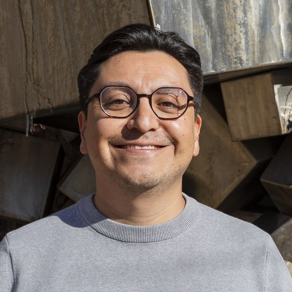
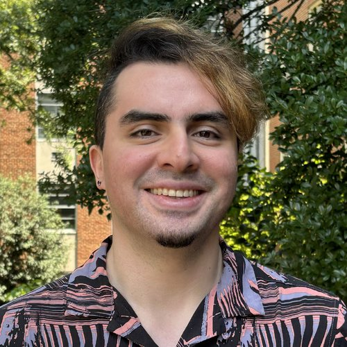
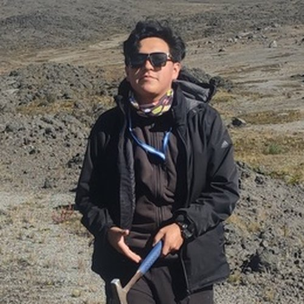
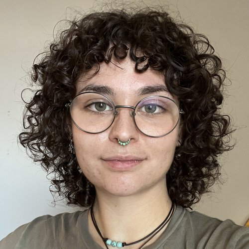
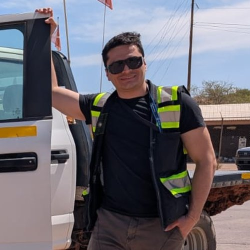
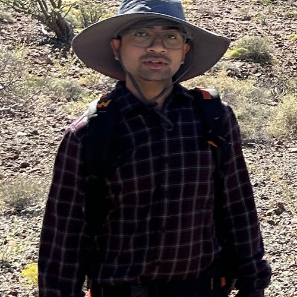

Team
Our group combines petrological modeling with field, analytical, and geochronological work on natural rocks. Students and postdocs in the group lead their own projects, present their work at national and international meetings, and have been successful in securing external funding for their research.
Principal investigator

David Hernández Uribe
Assistant Professor, Department of Earth and Environmental Sciences
Ph.D. in Geology, Colorado School of Mines (2020)
M.S. in Geological Sciences, Central Washington University (2017)
B.S. in Geological Engineering, UNAM, Mexico (2015)
Postdoctoral researcher at the University of Michigan and UIC before joining the UIC faculty in 2023.
Recipient of the 2026 GSA Donath Medal (Young Scientist Award).
Editor of Geochemistry, Geophysics, Geosystems (G3).
Postdoctoral researchers

Damián Donoso-Tapia
Postdoctoral researcher (2026–present)
Ph.D., University of North Carolina at Chapel Hill.
Project: The role of magmatic cumulates in porphyry Cu deposit formation in thickened crust.
Graduate students

Santiago Ramos-Galarza
Ph.D. student (2025–present)
Project: Ore fertility and crustal evolution in porphyry Cu and orogenic gold systems on Earth and beyond.
Awards: GSA Graduate Student Research Grant (Lipman Award), SEG Student Research Grant, and SEG and GSA travel grants (2026).
Dylan Enwia
M.S. student (2025–present)
Project: Titanite and apatite petrochronology of porphyries and related intrusions in Sonora, Mexico.
Awards: GSA Graduate Student Research Grant (Lipman Award), and SEG travel award (2026).

Morgan DiDomizio
M.S. student (2026–present)
Project: Petrochronology of porphyry Cu systems in Sonora, Mexico.
Previously an undergraduate researcher in the group (2025).
Undergraduate researchers
Isa Sagat
Undergraduate researcher (2026–present)
Former group members

Oscar Torres-Alarcon
M.S. 2025
Thesis: Geochemical constraints of porphyry Cu deposit-forming magmas in Sonora, Mexico.
Now at Freeport-McMoRan.

Subhendu Pramanik
M.S. 2025
Thesis: Early water on Mars hindered subduction-driven plate tectonics, published in JGR: Planets (2026).
GSA Graduate Student Research Grant (2024).
Now doing his Ph.D. at Trinity College Dublin.
Former undergraduate researchers: Indigo Sterud (2026); Kala Snyder (2025); Maria Garcia-Kinzig (2024–2025, Chancellor's Undergraduate Research Award); Maggie Klicka (2025); Catherine Barrientos (2024); Cole Stephenson (2024); Brian Liberato (2023–2024, Chancellor's Undergraduate Research Award; now a graduate student at the University of Alabama); Chris Serrano (2023–2024, Chancellor's Undergraduate Research Award).
Join the group
Prospective graduate students and postdoctoral researchers interested in petrology, ore deposits, subduction zones, or planetary evolution are encouraged to contact me by email with a short description of their interests and a CV. UIC undergraduates interested in research experience are also welcome to reach out.